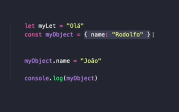
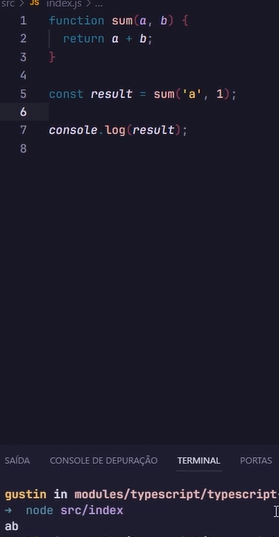

Como instalar as principais dependências
Só será visto ao desenvolver, ele é transpilado para Javascrip e interpretado pelo Node
No VS CODE Instale o GEstor de Pacotes NPM conforme comando
npm init -y
Criar pasta source e modulo index.js
funcao em java scrip com resultado result
veja que ele aceita qualquer coisa alem de numero (ANY)

a medida que o projeto cresce podemos acabar com esse erro com Typescript
Instalar dependencia de desenvolvimento

ou

npm install -D typescript
cria-se o arquivo index.ts
usando a mesma função agora se tipifica os dados
a: number, e b: number
o type infere que o retorno é um number dando erro se for string
podem se colocarem uma string na formula ele resulta em erro

resultado